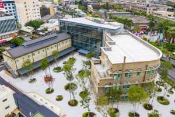

| 文化路夜市 嘉義市立美術館 阿里山森林鐵路車庫園區 | |
| 文化路夜市 | |
自日治時期起，嘉義市以大通（中山路）、二通（中正路）及文化路各具特色的商店與販售商品，成為嘉南平原上最熱鬧的商圈。文化路夜市美食小吃名氣響亮，包括大江南北點心、道地嘉義火雞肉飯、豆漿豆花、傳統春捲、異國料理，還有北部吃不到的薑汁番茄、半夜才開賣食材來自東石的蚵仔煎……等，滿足老饕們的味蕾，服貼了每張挑剔的嘴，慕名前來的美食行家們絡繹於途。 資料來源：嘉義好旅行 |
|
.JPG小.jpg) |
.jpg) |
| 嘉義市立美術館 | |
其主建物包含興建於1936年的古蹟、1954年的酒類倉庫和1980年的菸酒成品倉庫，建築形式兼具現代建築簡潔風格及面磚大量使用時期的特色，外牆轉角為弧形，基座抬高，開窗與窗楣呈水平帶狀；立面貼有北投產的SCRATCH風格磁磚，是古典建築風格蛻變為現代主義建築風格歷史見證。而在一、二樓樓梯處特別將柱頭、柱身設計為八邊稜角形的柱子，也是空間中的一大視覺焦點。 |
|
|  | .jpg) |
| 阿里山森林鐵路車庫園區 | |
嘉義車庫園區阿里山林業鐵路列車的停靠基地，也是火車迷們訪嘉朝聖的大型火車生態博物園區，來此可近距離觸摸阿里山林業鐵路退役的各式蒸汽火車、柴油機車、動力客車、客貨車廂，和日治時期日本皇太子上阿里山所搭乘的檜木車廂，一窺阿里山鐵路百年縮影。 |
|
.JPG小.jpg) |
.jpg) |